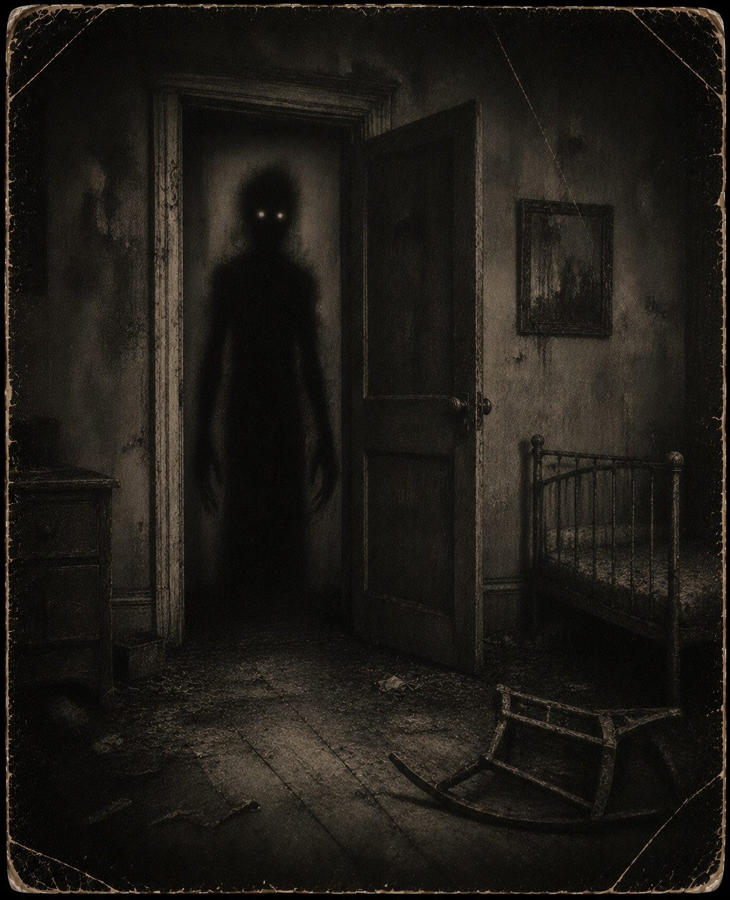

🌑 Entity Image

Threat Level
High
Classification
Shadow-Based Entity
Containment Status
Active Monitoring
Description
The Shadow Entity is a hostile presence that manifests through darkness, absence, and the sensation of being watched from places light cannot reach.
It rarely presents itself directly. Most encounters begin with movement in the corner of the eye, unexplained visual dimming, and reports of something standing just outside view.
Known Behaviour
The Shadow Entity becomes more resistant as its strength decreases, with shadows thickening around it during later containment phases.
It is also known to remember previous hunters. Researchers who repeatedly terminate this entity may find future attacks weakened, as if the entity has learned their presence.
Darkness should be treated as an extension of the entity itself.
Containment Notes
Do not enter unlit areas alone.
Do not respond to whispers from behind you.
If your shadow moves independently, report immediately and avoid reflective surfaces.
Archive Connection
All recorded appearances, defeats, and containment events involving The Shadow Entity are logged automatically through the Phantom Realm archive system.
Return to Entity Archive